歡迎來到 PHP雲端ERP 的世界
PHP 是開發 雲端ERP 應用程式的工具組。提供簡易的介面和邏輯結構來使用豐富的函式庫，其目的是讓你加 快開發速度。使用 PHP 只需要寫少少的程式，創造力可專注在專案開發。
雲端ERP 使用手冊目錄
貳、基本資料建立
一、基本資料管理系統之關連作業
１、共用參數設定作業
■程式代號：CMSI01
■作業目的：系統上線前基本參數設定，未設定者無法輸入異動資料。
■輸入畫面：
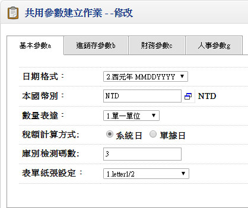 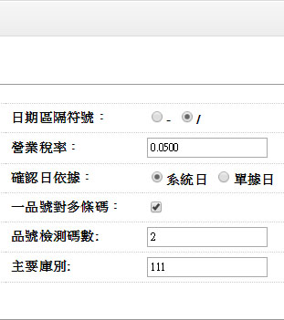▼
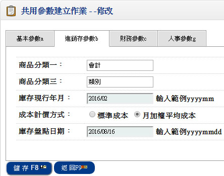 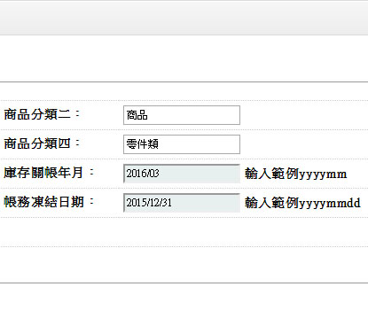- ■欄位說明：
- 確認日依據：
- 異動單據確認時;單據上確認日認定之日期來源。
- 數量表達方式:
- 單一單位:如選擇此項，則各異動單據只輸入一個異動單位數量
- 雙單位：如選擇此項，則偏向買賣業之運用，有大小單位之管控，則各異動單據需輸入異動單位及小單位數量，而大小單位間有固定之換算比率關係。
- 製造雙單位：如選擇此項，則偏向製造業之運用，有同時管控二個異動單位，則各異動單據需輸入異動單位及包裝單位之數量，異動單位及包裝單位之間不一定存在有固定之換算比率關係。
※製造雙單位之系統處理原則：
- ＆.限制條件：
- 共用參數設定檔中，數量表達方式設定為:3.製造雙單位，才會有此功能。
- 若為3.製造雙單位，則包裝單位都不可修改。
- ＆.處理邏輯：
- 所有建檔程式判斷共用參數設定檔中，數量表達方式是否設定為:3.製造雙單位，若不是則所有關於包裝數量之欄位皆隱藏;若是則顯示該欄位.
- 所有憑證程式判斷共用參數設定檔中，數量表達方式是否設定為:3.製造雙單位，若不是則所有關於包裝數量之欄位皆隱藏;若是則顯示該欄位.
- 所有報表程式則不判斷共用參數設定檔數量表達方式;所有包裝數量之欄位皆顯示，再用自定報表儲存其所需之格式.
- 品號基本資料檔，該品號要設定為有定重，且包裝單位不是空白，才會計算包裝數量;否則將包裝數量DEFAULT 為零.
- 單據建立時，判斷該品號是否有包裝單位，若沒有包裝單位則所有包裝數量之欄位都 DISPLAY ONLY;
- 檢驗狀態之判斷，不考慮包裝數量;依原數量作判斷.
- 數量之計算方式:
- 輸入數量會判斷該品號是否定重，若有定重且包裝數量=0，才會計算包裝數量
- 輸入包裝數量會判斷該品號是否定重，若有定重，才會計算數量
- 包裝數量可以作批號管理，控制庫存不足不可出庫，數量超收
- 所有金額之計算，依計價數量*單價=金額
- 所有數量欄位皆有對應之包裝數量欄位，但沒有計價包裝數量
<<第二頁:進銷存參數設定>>
- 庫存現行年月
- 本欄位為期初資料，指庫存期初庫存結餘的月份，例如預定於88/01 月開始由本系統管制庫存帳，那必須將87/12/31的庫存餘額輸入到系統，我們此餘額為期初值，如此庫存現行年月為87/12
- 資料設定後，無須由人工來維護，系統會透過「月底存貨結轉作業」來自動累計
- 本資料請勿自行修改，資料修改均影響「月底存貨結轉作業」及「現有庫存重計作業」執行結果之正確性
- 成本計價方式
- 標準成本制：
- 月加權平均成本制：
- 庫存現行年月
- 本欄位為期初資料，指庫存期初庫存結餘的月份，例如預定於88/01 月開始由本系統管制庫存帳，那必須將87/12/31的庫存餘額輸入到系統，我們此餘額為期初值，如此庫存現行年月為87/12
- 資料設定後，無須由人工來維護，系統會透過「月底存貨結轉作業」來自動累計
- 本資料請勿自行修改，資料修改均影響「月底存貨結轉作業」及「現有庫存重計作業」執行結果之正確性
- 庫存關帳年月
- 由使用者（會計人員）自行調整，不可大於庫存現行年月
- 指當存貨報表確定，會計人員查完帳務後，經會計師審查異動憑證確定後，表示這所有的憑證將不可修改。發生異常需調整時，必須調整於次年度，此種日期我們稱之為關帳年月，一般為會計年度之年底
- 帳務凍結日期
- 本日期以前（含本日）不得再進行庫存相關異動單據（入出庫）的輸入
- 主要是提會計人員者在核對存貨管理報表期間，避免其他使用者，再進行異動資料的增修，造成查帳的困擾，所以將查帳期間的帳務凍結
* 欄位不可空白。
* 本月份以前不得再進行庫存相關異動單據（入出庫）的輸入
* (1).標準成本制、(2).月加權平均成本制。
所有商品的進出，對於庫存價值的認定，統一一個單價，稱之為「標準成本制」
所有貨品的出庫的價值以該貨品當月份的平均成本認定，所以當進貨單價高時，該月份平均出庫成本就高
２、公司資料建立作業
■程式代號：CMSI11
■作業目的：將公司詳細資料建立，供憑證或報表輸出。
■輸入畫面：
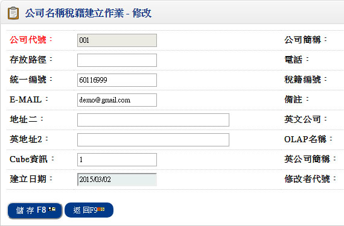３、廠別資料建立作業
■程式代號：CMSI02
■作業目的：
- 廠別資料為庫存，或商品異動相關報表資料的篩選條件，如計有三個工廠，每一工廠有四個庫別，在產生庫存明細表及進耗存統計表等相關報表產生時，均可用廠別來篩選條件。當然將來在執行MRP/LRP(物料需求計畫--生產計畫系統) 時廠別亦是一個重要資料區隔或篩選條件。
- 為配合全球ERP的管理，如果你只有單一製造廠管理，亦請您設定一個廠別代號來標示，在本系統的銷貨及採購系統的異動單據（銷貨單、銷退單、進貨單、退貨單…等）輸入時必須指定廠別
■輸入畫面：
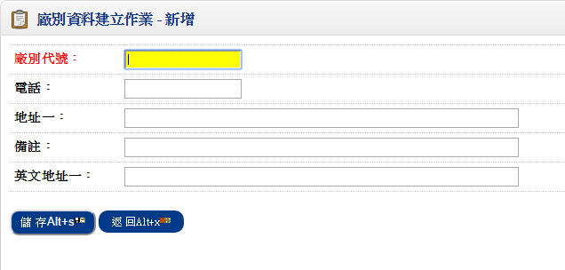４、庫別資料建立作業
■程式代號：CMSI03
■作業目的：商品存貨儲存倉庫，期初上線時請將庫別資料先行建立，再進行庫存系統的「品號資料建立」
■輸入畫面：
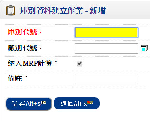 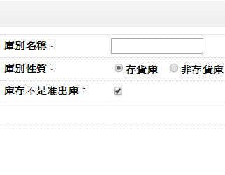- ■欄位說明：
- 庫別性質
- 分存貨倉及非存貨倉二種。若有一品號採標準成本制，標準成本為@5元在存貨倉有 100PC，在非存貨倉有5PCS，則本品號的存貨價值為500PCS，您可於「品號資料建立作業」單身看到二筆資料，但是在單頭的數量為100成本為500元
- 以製造業來說：
非存貨倉指本倉庫的商品計不計入庫存成本，如：有些製程不良的料件或商品，這些商品已經記入當期的製造成本，所以這些商品縱有庫存數量，都不應再計入存貨成本重複計算，所以這種報廢倉稱為非存貨倉 - 如一些製造工具（手動起子、板手），納入本系統進行存貨管制，而這些商品只管制數量不管制商品價值，則可以另設一種倉庫可稱為工具倉，則此倉應設為非存貨倉。
- 本系統亦提供服務性商品的銷售管理，比如說提供顧問諮詢、維修、設備拆解的服務，使用者可記錄服務的次數及價值，但對於總金額部份納入存貨是沒有意義的，所以這種倉庫亦為一種非存貨倉。
- 納入可用量計算
- 此倉庫的數量是否可納入可用量來累加。本系統在訂單系統之「客戶訂單資料建立作業」及「銷貨單建立作業」中，均可查詢品號的【可用庫存量】，當庫存餘額顯示『100PC』 時，這100PC到底可不可以銷貨呢？如果良品當然就應該可以，但是若其中有20PC不良品，那就應該只有80PCS 可用，我們稱存放20 PC的存貨倉庫為不納入可用量計算。
- 庫存量不足准許出庫
- 定義：簡單來說是當庫存數量為0時，可不可以執行出庫相關的單據核准呢？
以存貨為零，銷貨100 PC，如果設為【庫存量不足准許出貨】，表示允許庫存為【-100】PC，造成庫存餘額為「負」值。當然這是一種不合理的現象，但是對一些製造業而言，銷貨單在商品生產入庫前，是必須先行備單核准，如果將單據設為庫存量不足准許出貨，則表示銷貨單核准時一定要有存貨 - 一般來說只有製造業的成品倉庫才有設定允許庫存數量不足可以出貨的考量，一般的倉庫尤其是買賣行為的行業，他的倉庫管理主要是針對存貨者，均應設為庫存不足不可出貨。
５、生產線資料建立作業
■程式代號：CMSI04
■作業目的：生產線乃定義廠內生產排程或製造成本計算時商品製造費用分攤基礎的單元，有關成本資料應於「成本計算系統」上線時將資料準備完成並補輸入。
■輸入畫面：
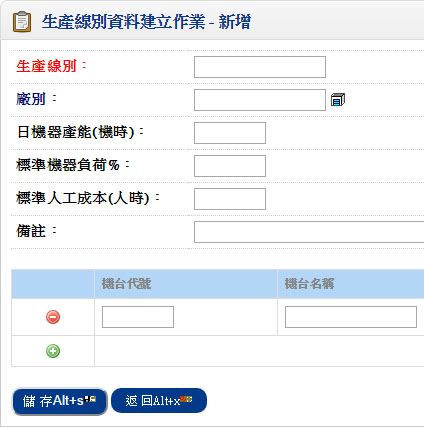 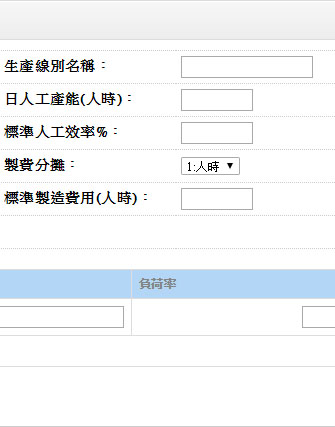- ■欄位說明：
- 每日人工產能
- 生產線每日的可用人工小時數。如果本生產線計有20人，每人每日平均出勤工時為7.5HR，則請輸入150HR，本欄位為本產品相關計算產能負荷的基礎資料（生產計劃及製令製程系統），如果您不做負荷管理則本欄位可不輸入。
- 每日機器產能
- 生產線每日的可用機器小時數。設定本欄位時，請留意，先前我們說這是計算負荷的基礎，人工是可因派工的手工將不同職能的時數累加，但是不同機器似乎就無累計的效果，例如3台車床及1台鉆床，每天可以工作7.5HR，您只能選擇車床或鉆床的負荷來當成此生產線負荷，不該全部用7.5×4＝30HR來輸入。。
- 製費分攤依據
- 1.人時、2.機時、3.人工。本欄位設定主要是在「成本計算系統」時，定義此條生產線的製造費用分攤基礎。。
- 標準人工成本
- 本欄位亦是成本計算系統的需求欄位，一般而言在計算產品的單元成本時，是採用當月份的實際支付薪工來做為實際人工成本的基礎，但是如果對某些企業，該實際成本無法取得，只能取得投入的工時，而想要以標準人工成本及實際工時來概估產品的人工成本時，您就必須於生產線中輸入本欄位值。
- 標準製造費用
- 本欄位亦是製費計算系統的需求欄位，一般而言在計算產品的單元費用時，是採用當月份的實際支付薪工來做為實際人工製費的基礎，但是如果對某些企業，該製造費用無法取得，只能取得投入的製費，而想要以標準人工製費及實際工時來概估產品的製造費用時，您就必須於生產線中輸入本欄位值。
６、部門資料建立作業
■程式代號：CMSI05
■作業目的：將公司內組織部門編號輸入，可作為分析之分類，或作資產分攤部門。
■輸入畫面：
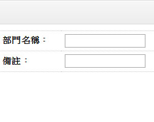７、幣別匯率建立作業
■程式代號：CMSI06
■作業目的：對作外幣交易時，每天之銀行買進賣出匯率需先行建立，至於海關買進賣出匯率可期間整批產生。單價；金額；單位成本及成本金額可依不同幣別設定不同取位。
■輸入畫面：
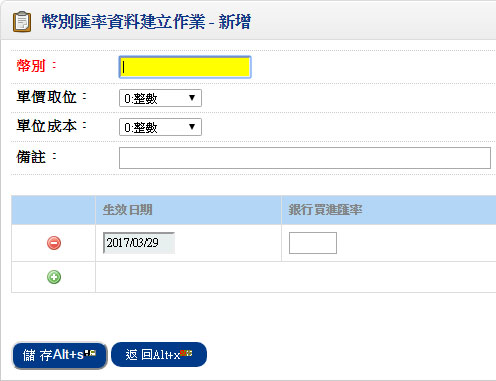 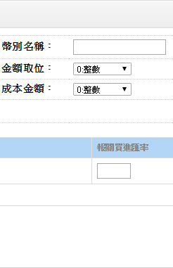- ■欄位說明：
- 對作外幣交易時，每天之銀行買進賣出匯率需先行建立，至於海關買進賣出匯率可期間整批產生
- 單價、金額、單位成本及成本金額可依不同幣別設定不同取位
- 銀行買進匯率：訂單系統及應收帳款系統於打單時所用的預設匯率
- 銀行賣出匯率：採購系統及應付帳款系統於打單時所用的預設匯率
- 報關買進匯率：出口系統於打單時所用的預設匯率
- 報關賣出匯率：進口系統於打單時所用的預設匯率
８、職務類別建立作業
■程式代號：CMSI09
■作業目的：將公司之員工作職務之歸屬，對相關欄位只可提供特定的職務人員所輸入。
■輸入畫面：
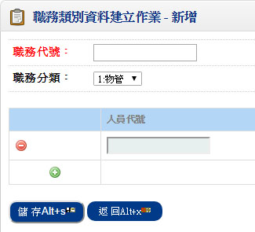 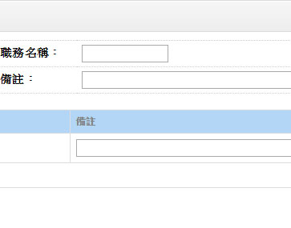９、常用摘要建立作業
■程式代號：CMSI12
■作業目的：對常用之摘要資料可先行建立，於一般備註欄位可以直接取用，提高輸入效率。
■輸入畫面：
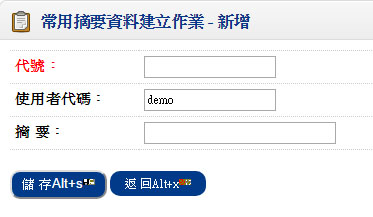１０、註記/簽核資料建立作業
■程式代號：CMSI17
■作業目的：對常用之註記及簽核可先行建立，可於列印憑證或報表取用。
■輸入畫面：
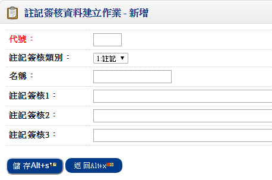１１、員工姓名建立作業
■程式代號：CMSI10
■作業目的：將公司所有員工資料建立，人事薪資系統之員工基本資料建立作業之來源。
■輸入畫面：
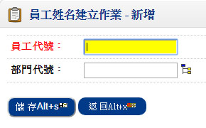 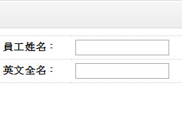１２、產品途程資料建立作業【產品結構系統】
■程式代號：BOMI07
■作業目的：產品標準途程建立，一產品可設定多種途程，為開立製令製程之資料來源。
■輸入畫面：
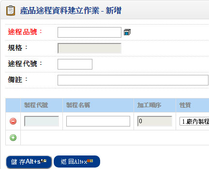 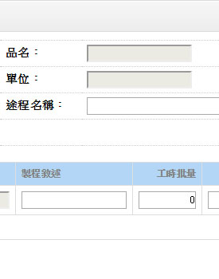- ■欄位說明：
- 加工順序
- 不可為空白
- 可修改
- 為每10號為跳號單位。例:0010、0020.....，方便中途插入加工順序用
- 工時批量
- 收集變動人時機時之批量
- 固定人時
- 加工此工序固定之人工準備時間
- 變動人時
- 加工此工序一工時批量所需人工時間
- 固定機時
- 加工此工序固定之機器準備時間
- 變動機時
- 加工此工序一工時批量所需機器時間
- 移轉批量
- 收集變動天數之批量
- 固定天數
- 加工此工序固定之準備天數
- 變動天數
- 加工此工序一移轉批量所需天數
- 落後天數
- 落後前一工序預計開工日期之天數
- 計算開工日期:(設定0表此上加工序完成後，此一加工序才開工，設定1以上為需求的開工日數，小於0.5表與上一加工序之開工日期+1為此加工序之開工日)
- 加工單價
- 此加工序為託外性質所計加工費的單位設定
- 加工單位
- 此加工序為託外性質所計加工費的單位設定
二、庫存管理系統的基本資料
１、品號類別資料建立作業
■程式代號：INVI01
■作業目的：本作業乃針對「共用參數設定作業」中，定義的四種分類四種子項資料建立。
■輸入畫面：
 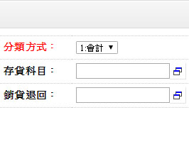
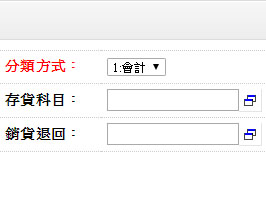
- ■作業說明：
- 關於會計科目的設定：
- 只要針對一種品號分類來定義向下子分類的會計科目，無須每種分類的重複定義。
- 本系統在「庫存明細表」，「進耗存統計表」時均會針對這些品號類別進行統計，報表的末端還會用會計科目來彙總，所以如果老闆要知道存貨中屬於原料、物料、半成品、成品進貨的商品有多少價值，您須依分類來定義會計科目。
- 請於「品號資料建立作業」資料開始登錄前將類別資料規劃完成，必要時亦可以將類別納入品號編碼原則中。
２、品號資料建立作業
■程式代號：INVI02
■作業目的：存貨及銷售商品的基本資料。
■輸入畫面：
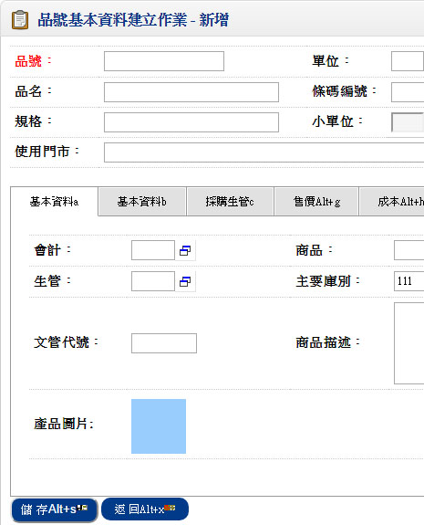 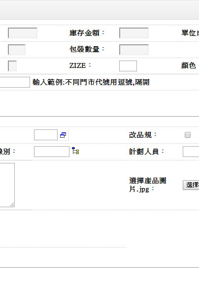- ■欄位說明：
- 品號
- 不可空白，不可重複
- 單位
- 指商品存貨單位，如果一個商品有不同「銷售」及「採購」單位，必須將所有會發生的單位以換算單位型態輸入，不可空白
- 小單位
- 當您的「共用參數設定作業」中定義有『小單位管理』時，本欄位才可輸入，而且輸入的單位，必須為已設定過的換算單位
- 如果該品號沒有『雙單位』的管理需求，則本欄位可空白
- 庫存數量
- 顯示欄位，使用者不得輸入修改。
- 系統自動將此品號在不同【存貨倉】（單身資料）的數量進行累加。
- 非存貨品號本欄位永遠為『0』
- 定重
- 公用參數之數量表達方式為'3'(製造雙單位)，才有作用
- 當異動單位與包裝單位有固定換算關係時，可勾選，當輸入異動單據時，異動數量與包裝數量之換算可依換算率換算出，仍可修改
- 包裝單位 (MB090)
- 公用參數之數量表達方式為'3'(製造雙單位)，才有作用
- 如需管控二個單位同時異動之數量，需設定包裝單位，包裝單位需存在換算單位檔中
- 包裝單位 (MB090)
- 公用參數之數量表達方式為'3'(製造雙單位)，才會顯示
- 包裝單位之存貨數量
- ■基本資料1：
- 修改品名/規格
- 一般來說，一個品號的品名規格描述是固定的，但是本功能是提供您對某些商品在接單時可以修改品號
- 此料件是否於異動單據處理時可以修改其品名及規格
- 此種料件一般應為事務性或耗材物料的採購管制，但不為存量管制之料件
- 原則必須是這個商品為零庫存
- 主要庫別
- 可空白，輸入時顯示庫別名稱
- 非空白時，輸入的資料必須存於庫別資料建立中
- 上線時，請準備資料至少輸入一筆，因此在輸入庫存相關異動單據（銷貨單、異動單據…）時庫別將以此庫為預設值
- 生產線別
- 可空白，主要針對自製作的生產線代號，[F2]生產線別資料查詢，輸入時顯示生產線名稱
- 非空白時，輸入的資料必須存在於生產線資料中中
- 此欄位為「生產計劃系統」上線的重要欄位，當執行MRP/LRP生產件的預設生產線別
- 計劃人員
- 指本品號的管理人員，該「職務分類」屬 1.物管 或 2.生管者
- 非空白時須存在於職務人員檔內
- 此欄位為採購系統的請購作業需求的資料及生產計劃系統執行MRP/LRP產生於計劃中的預設計劃人員
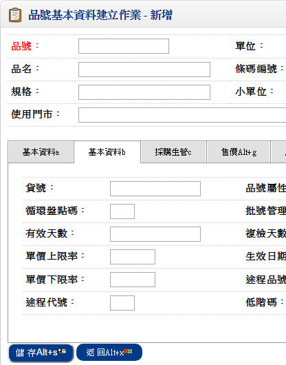 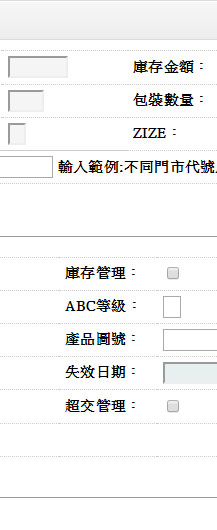
- ■基本資料２：
- 庫存管理
- 定義此商品對於庫存的進出要不要累加庫存數量，凡庫存管理的商品要預設為庫存管理，一些服務性商品如服務費／顧問費／維修費等，累計數量是沒有意義（金額直接於採購或銷貨中記錄或統計即可），此種商品即不做庫存管理
- 不做庫存管理的品號，在相關庫存異動時不會產生庫存異動明細資料
- 保稅品
- 提供保稅企業定義保稅品號，如果您非保稅公司請勿定義
- 凡定義為保稅料件在進貨時稅率預設為二聯零稅率
- 循環盤點碼
- 商品盤點時的群組碼，假設您的商品有10000 種，要分佈於每週星期六進行盤點，您可針對這些商品進行循環盤點碼的規劃，一個月四週，每週要盤2500件，所以您可定義 A，B，C ，D 四個盤點碼，屬於第一週要盤點的商品請您輸入【A】，最後一週要盤點的商品其盤點碼就輸入【D】
- 批號管理
- N:不需要 Y:需要 W:僅需警告
- 當設為「批號管理」的料件時，才可輸入「有效天數、複檢天數」欄位
- 批號管理特質：
- 在異動單據上的控管:
只要您在「品號資料建立作業」中設定該商品必須進行批號管理，則當此商品進行庫存異動單據輸入時(移轉單、其他入庫單、其他出庫單、調整單、進貨單、退貨單、銷貨單、銷退單、生產入庫單、領料單、託外進貨單、託外退貨單)均定義異動的批號。 - 庫存數量的查詢:
凡批號管制商品在進行異動單據出庫時，您可於數量處開窗查詢各批號的結餘，使用者在挑選出庫批號時，切勿造成庫存數量為『負值』的情形產生。 - 有效天數
- 凡批號管理者有時效管理時，從進貨或入庫當日到失效的有天數限由此欄位定義
- 進價管制&單價上限率
- 對採購進貨單價是否作上限管制，於此設定
- 售價管制&單價下限率
- 對銷貨單價是否作下限管制，於此設定
- 超交管理&超交率
- 對銷貨是否作超交管制，於此設定
- 品號屬性
- P:採購件、M:自製件、S:託外加工件、Y:虛設件、F:Feature件、O:Option
- 虛設料件：虛設料件是為簡化BOM結構，提高BOM管理效而產生
- 提高BOM資料處理及輸入的效率
- 簡化BOM工程變更的管理
- 節省磁碟資料庫的儲存空間
- Feature：指這種品號，在銷售時或生產時，某些必要的材料才能最後決定，如生產汽車時，顏色是由客戶來決定，我們稱「汽車」為Feature件，當受訂時如果沒有指定顏色則無法成為一成品
- Option件：一般指選配項，指定品號在銷售或生產時，在組成中的BOM結構中，有些組成可有可無，完全由客戶自己來決定如汽車的安全汽囊及ABS（當然我們假設它還沒有變成標準配備之前）或者OEM廠，生產相同的產品，只印不同的 LOGO，或者生產許多的贈品，只不知道要油印何種MARK
- 低階碼
- 預設為'00'，本欄位由系統來更新及維護，無須人工輸入，請於產品結構系統執行「低階碼更新作業」來更新
- ABC 等級
- 存貨耗用ABC等級，可由人工自行定義，或是系統上線後由庫存系統之庫存ABC分析表來更新
- 虛設料件有三個好處：
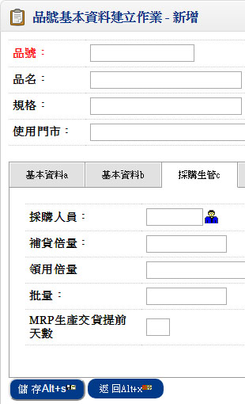 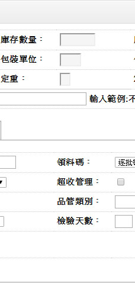
- ■採購生管：
- 主供應商
- 本欄位為執行MRP/LRP需求欄位，當料件產生採購計劃時，該計劃的預設採購廠商由此欄位定義
- 補貨政策
- R：依補貨點、M：依MRP需求、L：依LRP需求、N：不需、H：依歷史銷售記錄
- 產品序號管理
- 指維修系統的產品序號管理
- R：依補貨點
指這種商品的採購需求，可直接由庫存存貨量來判定。當庫存量小於補貨點我們就必須發出請購或採購行為，採購量應等於經濟批量與補貨倍量的最小聯集。我們稱這種採購模式的補貨方式為依需求補貨，由下圖來觀看，補貨政策與一些量的關係 - M：依需求補貨
表此類品號的生產及採購來自訂單需求（或計劃生產訂單）常有訂單時先檢視庫存數量及在途各種有效可用量，確實無法在時間點滿足需求時，則透過MRP/LRP來產生補貨計劃，我們稱此種料件為依需求補貨 - L：依LRP需求補貨
此種品號於M 中一些更為特殊的料件，更為特殊的意義，在於補貨時間點的定義 - 固定前置天數
- 一般指公司內部固定準備時間
- 流程的程序天數，如開單、核准、檢驗等
- 變動前置天數
- 屬於生產線的加工時間或採購件在供應商製造的時間，如果此時間的設定會因「量」的變更而成正比的變更，請於「批量」欄位輸入標準量
- 最低補量
- 最低生產量或訂購量
- 補貨倍量
- 對某些料件，生產或採購礙於生產條件或包裝方式，所有量必須為此量之倍數，如模具生產，每一模有10 PC所以購買時，供應商要求您下單量為10 倍數，則稱之為補貨倍量
- 領用倍量
- 觀念同補貨倍量，只不過它定義在工廠的領用方式
- 領料碼
- 計有1:逐批領料、2:自動扣料、3:單獨領料三種
- 超收
- 凡採購及託外加工件在進行進貨時，需進行超收管理者，則請選擇「ˇ」，並於下一欄位輸入超收率，如果不管制時，請您不設定
- 品管類別
- 預設此料件歸屬之品管類別
- 檢驗方式
- 預設此料件歸屬之檢驗方式
- 檢驗天數
- 品號進貨後需在何時完成品管檢驗期限
- MRP生產允許交期提前天數
- 生產件預設此料件允許交期提前天數，MRP系統使用之需求欄位
- MRP採購允許交期提前天數
- 採購件預設此料件允許交期提前天數，MRP系統使用之需求欄位
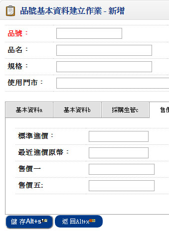 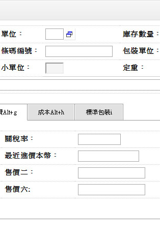
- ■售價：
- 標準進價
- 輸入值將來會成為採購單預設採購單價的取價順序之一
- 關稅率
- 進口之關稅率
- 報關/贖單資料建立作業之關稅率來源
- 標準售價
- 輸入值將來會成為訂單預設單價的取價順序之一
- 最近進價
- 以原幣乘上當時幣別匯率而得到本國幣別單價，換算為本國幣別時，依幣別做金額取位
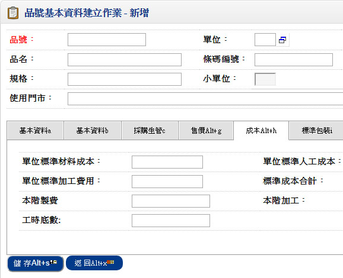
- ■成本：
- 標準材料成本
- 『採購件』於系統上線前必須由人工將材料標準成本輸入本欄位
- 標準人工成本
- 指「製造件」或「加工件」，從投料到生產完成的總人工成本
- 透過產品結構系統之「標準成本更新作業」而來。資料有誤時請追溯源頭修改，請勿直接由本欄位來維護
- 標準製造費用
- 指「製造件」或「加工件」，從投料到生產完成的總製造費用
- 透過產品結構系統之「標準成本更新作業」而來。資料有誤時請追溯源頭修改，請勿直接由本欄位來維護
- 標準加工費用
- 指「製造件」或「加工件」，從投料到生產完成的總加工費用
- 透過產品結構系統之「標準成本更新作業」而來。資料有誤時請追溯源頭修改，請勿直接由本欄位來維護
- 標準成本合計
- 材料成本＋人工成本＋製造費用＋加工費用
- 單位成本欄位
- 本階人工
- 指「製造件」或「加工件」，從投料到生產完成的人工成本
- 本階製費
- 指「製造件」或「加工件」，從投料到生產完成的製造費用
- 本階加工
- 指「製造件」或「加工件」，從投料到生產完成的加工費用
- 本階成本合計
- 單位成本欄位
- 本階人工＋本階製費＋本階加工
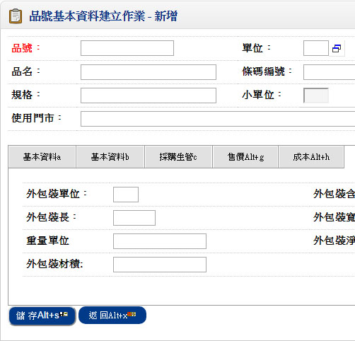
- ■標準包裝：
- 外包裝淨重
- 外包裝含商品數*單位淨重
- 外包裝毛重
- 外包裝淨重+包裝材料之重量
- 外包裝含商品數量
- 一個外包裝裝多少產品量(不計內包裝)
３、單據性質設定作業
■程式代號：INVI04
- ■作業目的：
- 凡於庫存系統所使用的單據如盤點單、報廢單、轉撥單、數量調整單等，必須先於本作業編設單據代碼及相關基礎資料，以方便日後異動單據輸入。
- 作業一經設定請勿隨意修改，必須修改時，請保持在單一使用者狀況修改，再次提醒您，異動類別將影響進耗存的統計，千萬不得造成單據不同時區，所代號的異動類別不同。
■輸入畫面：
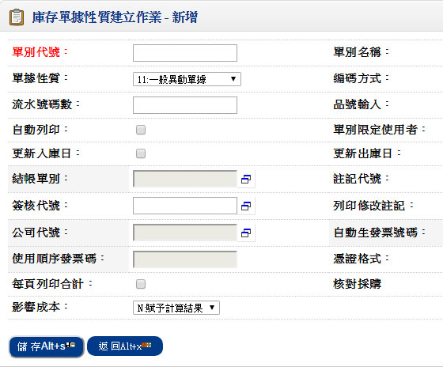- 異動類別
- 1.入庫、2.銷貨、3.領用、4.轉撥、5.調整
- 進耗存統計表之異動分類來源
- 影響成本
- Y.成本計算來源、N.賦予計算結果、y.成本調整
- 此欄位定義這種單別的異動金額與「存貨計價方式」的關連
- 更新入庫日
- 定義此種單別在單據核准時，是不是要更新「品號資料建立作業」之單身該異動庫別之『最近入庫日』
- 本欄位的設定與呆滯料定義有關，設定時可參考呆滯料分析表的邏輯
- 更新出庫日
- 定義此種單別在單據核准時，是不是要更新「品號資料建立作業」之單身該異動庫別之「最近出庫日」
- 本欄位的設定與呆滯料定義有關，設定時可參考呆滯料分析表的邏輯
- 更新盤點日
- 定義此種單別在單據核准時，是不是要更新「品號資料建立作業」之單身該異動庫別之「更新盤點日」
- 一般定期盤點及不定期抽盤的數量調整單屬之
- 自動確認
- 單據輸入完成（如零星領料）是否馬上核准（更新庫存帳），如果公司的打單與簽核為分工權責者，那就非為自動確認
- 自動列印
- 直接列印即每輸入一張單據，打單完成就從印表機印一張憑證出來